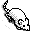
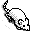

When Simbrain launches, simply press play, , in the network toolbar and observe activity propagating through the network and the creature moving. Open different workspaces using File > Open Workspace and press play in the network windows to see what happens.
, in the network toolbar and observe activity propagating through the network and the creature moving. Open different workspaces using File > Open Workspace and press play in the network windows to see what happens.
Open the workspace attract.sim, (simulation > sims > vehicles > attract.sim). Click the play button then click and drag the object  to move it accross the world and observe the creature in the world chasing after it. Now try repulse.sim, (simulation > sims > vehicles > repulse.sim).
to move it accross the world and observe the creature in the world chasing after it. Now try repulse.sim, (simulation > sims > vehicles > repulse.sim).
Finding Stable States
Open the workspace iac.sim, (simulation > sims > lessons > iac.sim ). While in the network component, select all nodes by pressing "N"on the keyboard, then press "R" to randomize the nodes and press the space bar a few times to update the network until it settles onto a stable state (meaning that the nodes do not change when you press the spacebar or develop a sort of cycle). Repeat; press "R" and "space, space, space" repeatedly until the net settles in a stable state, then "R" and "space, space, space." again, etc. In this way get a sense of the stable states of that network.
Build a Network
Open a new network window, Insert > New Nework, and create a few neurons using the  button. Then connect them as described here. Run the network. Or, create a network of a specific type, on the Network window: Insert > New Network > ... Just press OK if a dialog box appears and see how this kind of network behaves when you press run. *note* This approch does not work for the options: competative, standard and winner take all. It takes more understanding to create neworks of these kinds that do anything interesting.
button. Then connect them as described here. Run the network. Or, create a network of a specific type, on the Network window: Insert > New Network > ... Just press OK if a dialog box appears and see how this kind of network behaves when you press run. *note* This approch does not work for the options: competative, standard and winner take all. It takes more understanding to create neworks of these kinds that do anything interesting.
Connecting to a World
Keeping the same network you just built open up a new world, on the Simbrain window: Insert > New World > OdorWorld. Right click the World window and select Add New Agent. You can now connect the network to the world by right clicking on neurons and selecting Sensors > ... and Motor Commands > ... from the popup menu. To experiment with this: adjust a neuron so that it has a motor cmmand, add some activation to that neuron, and run the network.
Study Network Parameters
Open a Workspace. Select all nodes by pressing "N", then double-click on a node. Change it's decay value, activation function, etc. Then move the creature around a bit to see how network dynamics have changed.
Study Learning
Select all weights by pressing "W", then double-click on a weight. Change it's learning rule or other parameters. Then run the network and see whether the weights change size.
Use Gauges
Open a gauge by pressing the add gauge button  . If there is an odor world drag the creature around the different objects and watch the patterns that emerge in the gauge. Otherwise, randomize and then run the network. Try opening different worlds, networks and gauges and seeing what patterns show up. When a pattern has developed for a period of time, switch the gauge projection chooser from "Coordinate" to "PCA" and from "PCA" to "Sammon." When it is in Sammon press the play button inside that gauge to see what patterns emerge.
. If there is an odor world drag the creature around the different objects and watch the patterns that emerge in the gauge. Otherwise, randomize and then run the network. Try opening different worlds, networks and gauges and seeing what patterns show up. When a pattern has developed for a period of time, switch the gauge projection chooser from "Coordinate" to "PCA" and from "PCA" to "Sammon." When it is in Sammon press the play button inside that gauge to see what patterns emerge.